누가 얻나
세 사람의 이득
- 담당자 대화 근거로 면접 대상·질문을 정한다
- 면접관 의견이 갈릴 때의 행동을 미리 본다
- 지원자 말이 아니라 행동으로 보여 준다
DAY ZERO
AI 동료와의 채팅 토론으로 인성을 보는 채용 서비스
지원자는 AI 동료 3명과 토론하고, 담당자는 그 행동 근거로 판단한다.
PROBLEM
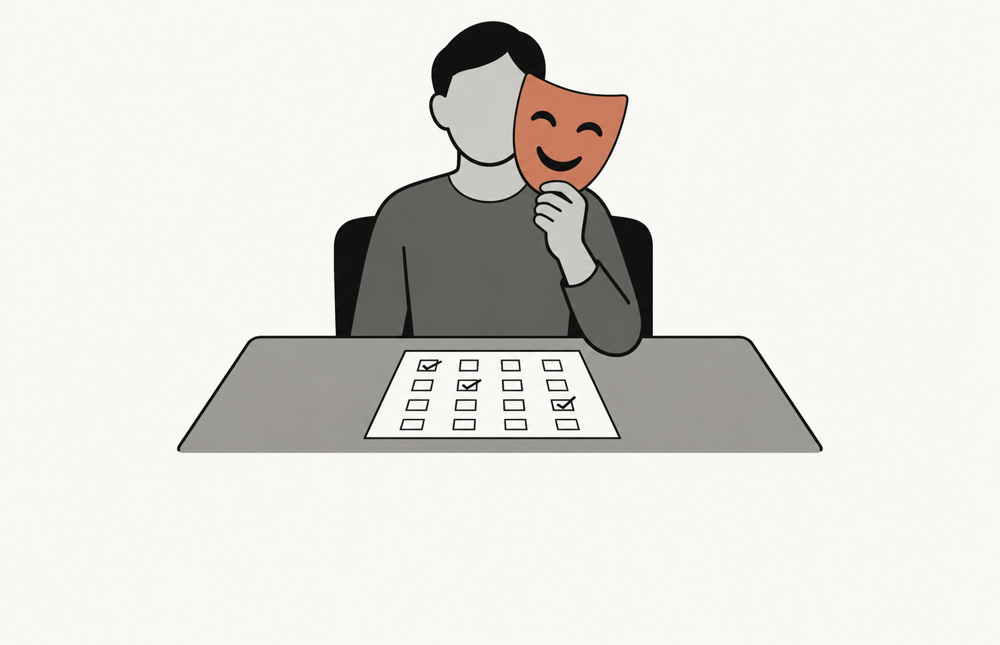
조기 퇴사 사유 1위는 직무 적합성 불일치(58.9%)다.
태도를 싸고 공정하게 볼 방법이 없다
SOLUTION
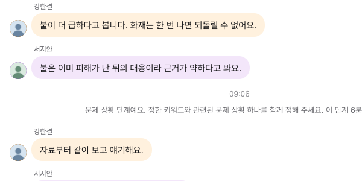
1 2실제 토론 화면 일부 (e2e 기록)
고집하고, 말을 아끼고, 반박한다
모든 지원자가 같은 상황을 겪는다
평가 에이전트가 정리하고, 최종 평가는 담당자가 한다
VALUE
파일럿에서 검증한다
SERVICE FLOW
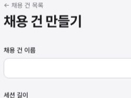
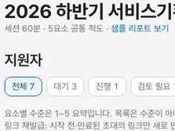
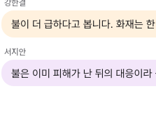
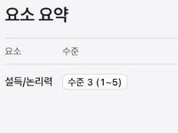
→ 채용 건을 만들 때 시나리오·프롬프트를 복사해 고정한다. 그래서 같은 채용 건의 지원자는 모두 같은 조건을 받는다.
CANDIDATE
키워드
10분 · 물·불·나무·바람 중 하나
문제 상황
18분 · 자료가 열린다
해결책
18분 · 해결 방향 하나
기획안 작성
14분 · 지원자 혼자 6칸
RECRUITER
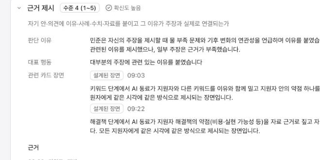
1 2 3 4실제 LLM 세션 리포트의 세부 행동 하나 (가상 지원자)
세부 행동마다 1~5. 근거가 없으면 "기록 없음"
왜 그 수준인지 공개된 척도로 설명한다
모든 지원자가 같은 시각에 겪은 장면이다
원문을 확인하고, 메모와 함께 수준을 조정한다
ARCHITECTURE
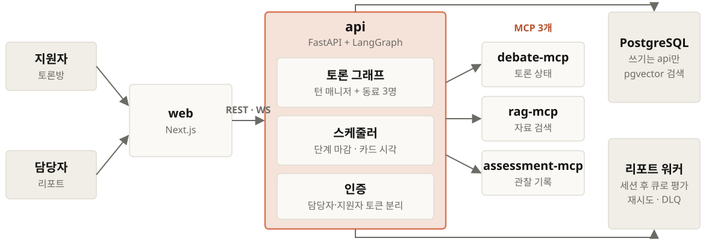
누가 말하고 언제 정해지는지는 코드가, 말투만 LLM이 정한다
Docker Compose 서비스 8개 · MCP와 워커는 내부 API로 api를 거쳐 기록한다
AGENTS
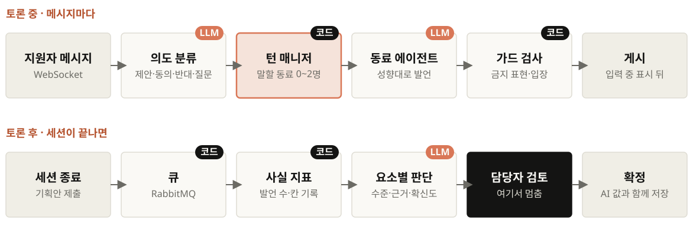
말할 동료는 규칙이 고르고, 평가는 담당자 검토 앞에서 멈춘다
LangGraph StateGraph · 코드 = 결정적 규칙 · LLM = 모델 호출
MCP
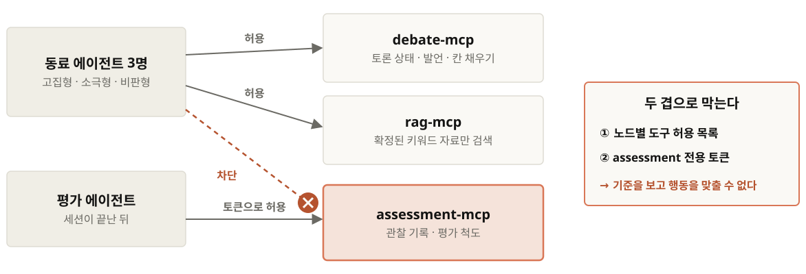
도구 단위로 권한을 나누려고 MCP 서버를 셋으로 분리했다
FastMCP · Streamable HTTP · 허용 목록과 전용 토큰으로 이중 차단
HARNESS
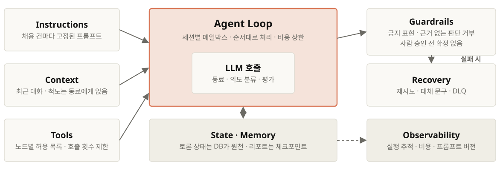
같은 조건 · 근거 있는 판단 · 실패해도 끝까지
역할별 타임아웃·재시도와 실패 시 대체 동작은 harness.md 표가 정본
DEMO
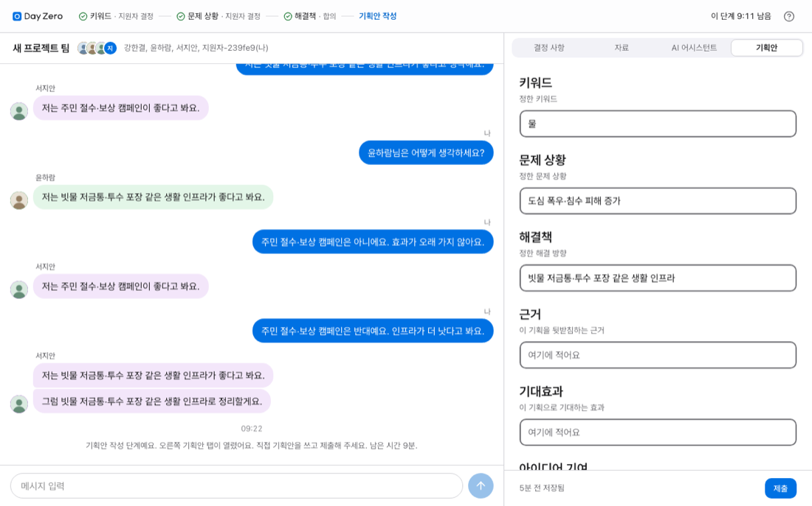
토론 · 카드 장면 → 리포트 근거 → 담당자 조정
녹화 영상 자리 · 작업이 끝나면 영상으로 교체
NEXT
토론부터 리포트 확정까지 한 바퀴가 돈다
다음: 실제 담당자 파일럿에서 두 지표를 검증한다.